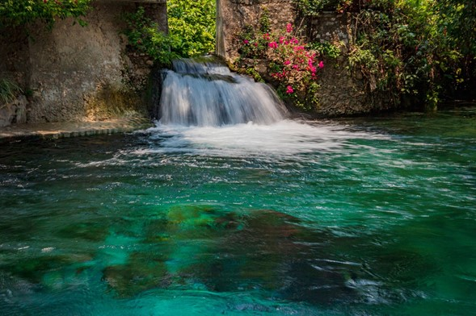
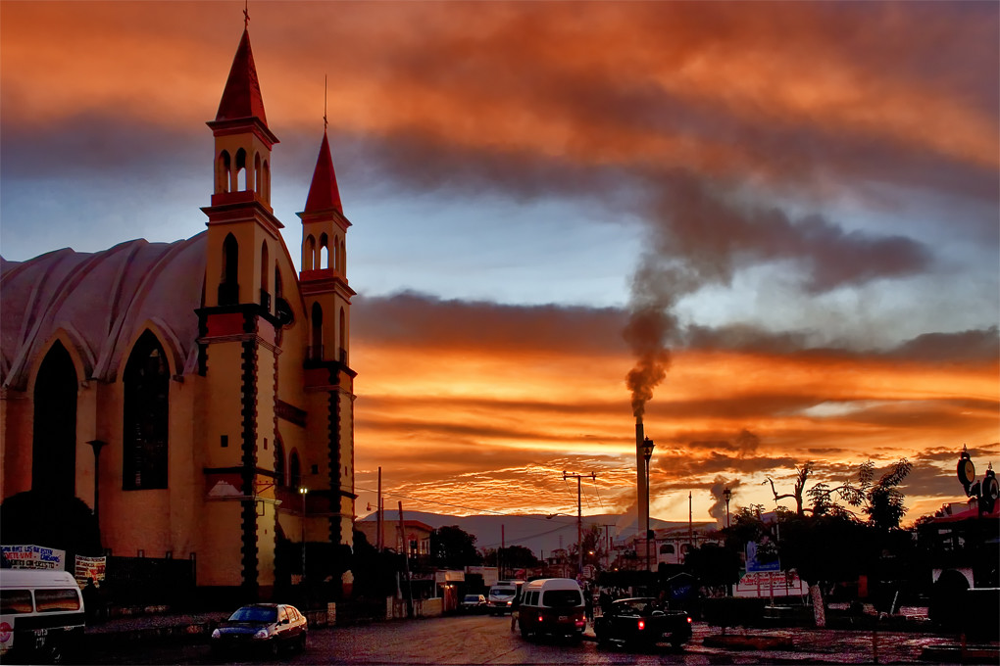

Lugares de Morelos

Pueblos mágicos
Descubre la magia viva de México en cada rincón. Tradiciones, colores y encanto que te enamoran desde el primer paso.

Zonas arqueológicas
Viaja al pasado y camina entre las huellas de antiguas civilizaciones. La historia te espera bajo cada piedra.
Balnearios y parques acuáticos
Sumérgete en la frescura natural de Morelos: aguas cristalinas, paisajes únicos y momentos inolvidables.
Tepoztlán
Pueblo mágico con historia, naturaleza y tradición.
Cuernavaca
Conocida como la ciudad de la eterna primavera.

Xochicalco
Esta zona arqueológica fue un centro cultural y político importante durante el periodo Epiclásico.

Tlayacapan
Pueblo Mágico, donde podrás disfruta de belleza naturales y artesanías .
Tequesquitengo
Un lugar ideal para alejarte del estrés de la ciudad y adentrarte en un paraíso natural color azul.
Tlalquitenango
Descubre en Tlaquiltenango muros milenarios, balnearios legendarios y raíces profundas que te conectan con la historia.
Tlaltizapán
Tlaltizapán te espera con aguas cristalinas, historia viva y tradiciones que laten al ritmo del corazón del Sur.
Temixco
Explora ruinas milenarias, refréscate en antiguos azudales y vive la emoción bajo el sol morelense.
Zacatepec
relájate en balnearios históricos, explora senderos milenarios y vibra con el fútbol en su emblemático estadio.
Cuautla
Conocida como la Heroica e Histórica Ciudad de Cuautla, su nombre nahua significa “lugar de las águilas”.

Jonacatepec
Su riqueza histórica se centra en el Ex‑Convento de San Agustín y la zona arqueológica de Las Pilas.

Emiliano Zapata
La historia de la Revolución cobra vida entre cerámica, tradiciones y la esencia del sur de Morelos.

Jojutla
Un destino turístico en el sur de Morelos que combina naturaleza, historia y cultura.
Yecapixtla
Yecapixtla, es un municipio lleno de historia, tradición y sabor.
Huitzilac
Disfruta del aire fresco y el verde de sus paisajes.

Tetela del volcán
Es un lugar con una rica historia y cultura que se remonta a la época prehispánica.
Coatetelco
Pueblo indigena lleno de historia y tradición.
Hueyapan
es un destino que preserva sus raíces y promueve el bienestar comunitario a través de experiencias auténticas.
Jiutepec
Camina por plazas llenas de vida y tradiciones: sabores, historia y la calidez morelense en cada esquina.
Huautla
Este destino reconocible como Pueblo Mágico desde 2015 ofrece una mezcla única de naturaleza y cultura local